'text-decoration' 特性描述了一个元素的附加文本装饰，它的值包括：'none'、'underline'、'overline'、'line-through' 和 'blink'，初始值为 'none'。
关于 'text-decoration' 特性的详细信息，请参考 W3C CSS 2.1 规范 16.3 Decoration。
在不同浏览器中的表现存在差异。
| 所有浏览器 |
|---|
当行内元素包含块级或非行内元素时，在各浏览器下表现有差异，分析以下代码：
<span style="text-decoration:underline;color:blue;"> <div
style="float:left;margin-top:16px;"> float element </div> </span> <span
style="text-decoration:underline;color:blue;"> <div style="clear:both;"> block element
</div> </span> <span style="text-decoration:underline;color:blue;"> anonymous inline
box<br/> </span> <span style="text-decoration:underline;color:blue;"> <span>
inline element </span><br/> </span> <span
style="text-decoration:underline;color:blue;"> <div
style="position:absolute;top:5px;left:8px;"> absolute position element </div> </span>
<span style="text-decoration:underline;color:blue;"> <div style="position:relative;">
relative position element </div> </span> <span
style="text-decoration:underline;color:blue;"> <div style="display:inline-table;"> inline-table
</div><br/> </span> <span style="text-decoration:underline;color:blue;"> <div
style="display:inline-block;"> inline-block </div><br/> </span> <span
style="text-decoration:underline;color:blue;"> <img src="pic.png" /><br/> </span>
<span style="text-decoration:underline;color:blue;"> <img src="pic.png" /> text after the
IMG </span>
在行内元素上设置了 'text-decoration' 和 'color' 特性，其内子元素有：匿名行内元素，行内元素，图片，图片加文本，块级元素， 浮动元素，绝对定位元素，相对定位元素，以及 'inline-table' 和 'inline-block' 元素。各浏览器下中表现汇总如下：
| IE6 IE7 IE8(Q) Firefox(Q) | Firefox(S) | Chrome(S) Safari(S) |
|---|---|---|
| 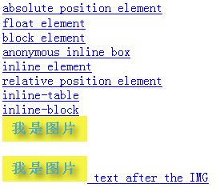 | 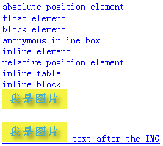 | 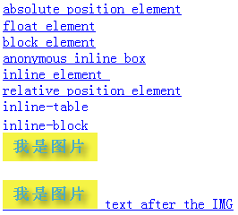 |
| Chrome(Q) Safari(Q) | Opera IE8(S) |
|---|---|
| 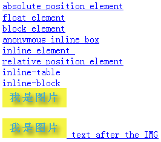 | 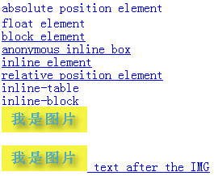 |
根据测试结果进一步整理为更直观的表格，如下：1
| 子元素类型 | IE6 IE7 IE8(Q) Firefox(Q) | Firefox(S) | Chrome(S) Safari(S) | Chrome(Q) Safari(Q) | Opera IE8(S) |
|---|---|---|---|---|---|
| 绝对定位元素 | 受影响 | 不受影响 | 受影响 | 受影响 | 不受影响 |
| 相对定位元素 | 受影响 | 不受影响 | 受影响 | 受影响 | 受影响 |
| 浮动元素 | 受影响 | 不受影响 | 受影响 | 受影响 | 不受影响 |
| 块级元素 | 受影响 | 不受影响 | 受影响 | 受影响 | 受影响 |
| 行内[匿名]元素 | 受影响 | 受影响 | 受影响 | 受影响 | 受影响 |
| inline-table | 受影响 | 受影响 | 不受影响 | 不受影响 | 不受影响 |
| inline-block | 受影响 | 受影响 | 不受影响 | 不受影响 | 不受影响 |
| IMG 元素 | 不受影响 | 不受影响 | 不受影响 | 不受影响 | 不受影响 |
| IMG 元素 + 文本 | 不影响+影响 | 影响+影响 | 影响+影响 | 不影响+影响 | 不影响+影响 |
注1：“不受影响”指父元素上设置的 'text- decoration' 属性对子元素无效
从上表中可以直观的看出，行内元素上设置 'text-decoration' 属性时，其内子元素的渲染在各浏览器下存在较大差异。 另，'display' 值 'inline-table' 和 'inline-block' 在 IE6、IE7 和 IE8(Q)下不被支持， 本例中设置有以上值的 DIV 元素在这些浏览器下被视为块级元素。
对于此问题，我们通过以下的测试用例来说明，分析以下代码：
<div style="text-decoration:underline;color:blue;"> <div
style="float:left;margin-top:16px;"> float element </div> <div style="clear:both;"> block
element </div> anonymous inline box<br/> <span> inline element </span> <div
style="position:absolute;top:5px;left:8px;"> absolute position element </div> <div
style="position:relative;"> relative position element </div> <div
style="display:inline-table;"> inline-table </div><br/> <div
style="display:inline-block;"> inline-block </div><br/> <img src="pic.png" />
</div>
在非行内元素上设置了 'text-decoration' 和 'color' 特性，其内子元素包括：匿名行内元素，行内元素，图片，块级元素，浮动元素， 绝对定位元素，相对定位元素，以及 'inline-table' 和 'inline-block' 元素。各浏览器下中表现汇总如下：
| IE6 IE7 IE8(Q) Firefox(Q) | Firefox(S) | Chrome Safari | Opera IE8(S) |
|---|---|---|---|
| 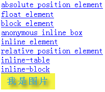 | 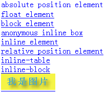 | 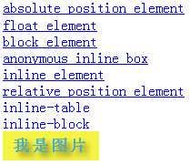 | 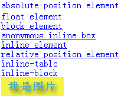 |
根据测试结果进一步整理为更直观的表格，如下：2
| 子元素类型 | IE6 IE7 IE8(Q) Firefox(Q) | Firefox(S) | Chrome Safari | Opera IE8(S) |
|---|---|---|---|---|
| 绝对定位元素 | 受影响 | 不受影响 | 受影响 | 不受影响 |
| 相对定位元素 | 受影响 | 受影响 | 受影响 | 受影响 |
| 浮动元素 | 受影响 | 受影响 | 受影响 | 不受影响 |
| 块级元素 | 受影响 | 受影响 | 受影响 | 受影响 |
| 行内[匿名]元素 | 受影响 | 受影响 | 受影响 | 受影响 |
| inline-table | 受影响 | 受影响 | 不受影响 | 不受影响 |
| inline-block | 受影响 | 受影响 | 不受影响 | 不受影响 |
| IMG 元素 | 不受影响 | 受影响 | 不受影响 | 不受影响 |
注2：“不受影响”指父元素上设置的 'text- decoration' 特性对子元素无效。
从上表中可直观的看出，非行内元素上设置 'text-decoration' 特性时，其内子元素的渲染在 Opera 和 IE(S)下最符合标准中所描述的。 另，'display' 特性值为 'inline-table' 和 'inline-block' 在 IE6、IE7 和 IE8(Q) 下不被支持， 本例中设置有以上值的 DIV 元素在这些浏览器下被视为块级元素。
此外，当子元素为 IMG 元素 + 文本时，同行内元素上应用 'text-decoration' 特性时一致。
对于此问题，我们通过以下的测试用例来说明，分析以下代码：
<span style="text-decoration:line-through;color:red;"> <div
style="text-decoration:underline;color:blue;float:left;margin-top:16px;"> float element </div>
</span> <span style="text-decoration:line-through;color:red;"> <div
style="clear:both;text-decoration:underline;color:blue;"> block element </div> </span>
<span style="text-decoration:line-through;color:red;"> <span
style="text-decoration:underline;color:blue;"> inline element </span><br/> </span>
<span style="text-decoration:line-through;color:red;"> <div
style="text-decoration:underline;color:blue;position:absolute;top:5px;left:8px;"> absolute position
element </div> </span> <span style="text-decoration:line-through;color:red;"> <div
style="text-decoration:underline;color:blue;position:relative;"> relative position element
</div> </span> <span style="text-decoration:line-through;color:red;"> <div
style="text-decoration:underline;color:blue;display:inline-table;"> inline-table
</div><br/> </span> <span style="text-decoration:line-through;color:red;">
<div style="text-decoration:underline;color:blue;display:inline-block;"> inline-block
</div><br/> </span>
各浏览器下中表现汇总如下：
| IE6 IE7 IE8(Q) Firefox(Q) | Firefox(S) | Chrome Safari | Opera IE8(S) |
|---|---|---|---|
| 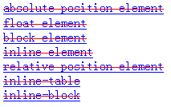 | 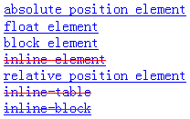 | 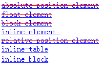 | 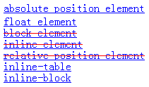 |
根据测试结果进一步整理为更直观的表格，如下：3
| 子元素类型 | IE6 IE7 IE8(Q) Firefox(Q) | Firefox(S) | Chrome Safari | Opera IE8(S) |
|---|---|---|---|---|
| 绝对定位元素 | 不影响 | 影响 | 不影响 | 影响 |
| 相对定位元素 | 不影响 | 影响 | 不影响 | 不影响 |
| 浮动元素 | 不影响 | 影响 | 不影响 | 影响 |
| 块级元素 | 不影响 | 影响 | 不影响 | 不影响 |
| 行内元素 | 不影响 | 不影响 | 不影响 | 不影响 |
| inline-table | 不影响 | 不影响 | 影响 | 影响 |
| inline-block | 不影响 | 不影响 | 影响 | 影响 |
注3：“影响”指父元素上设置的 'text-decoration' 特性对子元素无效。
当 'text-decoration' 应用在行内元素上时，它对其内子元素文本的装饰效果无法应用到上表单元格中标为“影响”的元素上。 如在 Firefox(S) 下，行内元素内嵌块级元素时，块级元素的文本装饰效果与其父元素（行内元素）的 'text-decoration' 特性设置无关。
以上结果都是在父元素为行内元素时测得的，下面修改测试代码，把父元素 SPAN 改为块级元素 DIV，再次测试，记录结果整理如下：4
| 子元素类型 | IE6 IE7 IE8(Q) Firefox(Q) | Firefox(S) | Chrome Safari | Opera IE8(S) |
|---|---|---|---|---|
| 绝对定位元素 | 不影响 | 影响 | 不影响 | 影响 |
| 相对定位元素 | 不影响 | 不影响 | 不影响 | 不影响 |
| 浮动元素 | 不影响 | 不影响 | 不影响 | 影响 |
| 块级元素 | 不影响 | 不影响 | 不影响 | 不影响 |
| 行内元素 | 不影响 | 不影响 | 不影响 | 不影响 |
| inline-table | 不影响 | 不影响 | 影响 | 影响 |
| inline-block | 不影响 | 不影响 | 影响 | 影响 |
注4：“影响”指父元素上设置的 'text-decoration' 特性对子元素无效。
根据具体应用环境，参照“问题分析”中各种情况在各浏览器下的结果汇总使用兼容性较好的方案。
| 操作系统版本: | Windows 7 Ultimate build 7600 |
|---|---|
| 浏览器版本: |
IE6
IE7 IE8 Firefox 3.6.3 Opera 10.51 Chrome 5.0.396.0 dev Safari 4.0.4 |
| 测试页面: |
inline_parent_text_decoration
uninline_parent_text_decoration inline_parent_and_children_text_decoration |
| 本文更新时间: | 2010-07-21 |
text-decoration 文本装饰